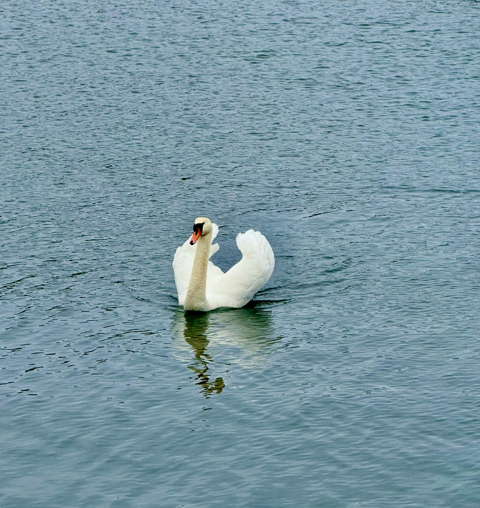
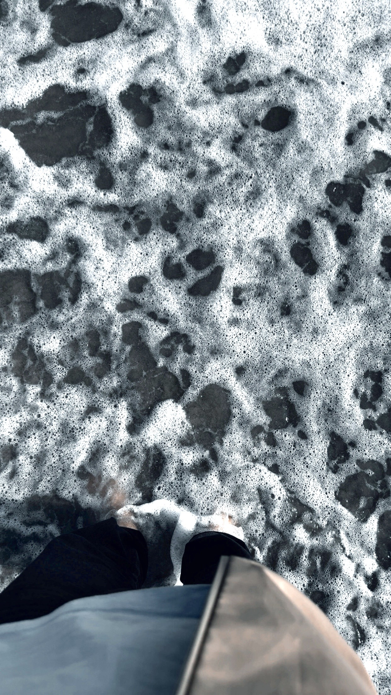

Hvem er vi?
Hos os finder du inspiration, råd og støtte til at styrke dit mentale velvære. Vi tror på, at små daglige skridt kan skabe stor forskel, og at trivsel er noget, vi bygger sammen, skridt for skridt. Uanset hvor du er på din rejse, er LorenZen her for at hjælpe dig, med at finde ro og balance i hverdagen.
At tage første skridt
Trivsel starter med bevidsthed og modet til at lytte til sig selv. Hos LorenZen møder vi dig dér, hvor du er, med værktøjer og indsigt, der styrker dit mentale fundament. Vi hjælper dig med at skabe små, men meningsfulde forandringer, som kan mærkes i hverdagen: mere overskud, bedre søvn, stærkere relationer og en dybere følelse af ro. Her handler det ikke om at være perfekt, men om at tage ansvar for din trivsel, i dit tempo.
Fællesskab & udvikling
Hos LorenZen tror vi på, at vi vokser gennem fællesskab. Vi skaber rum, hvor du kan dele oplevelser, finde støtte og opdage nye perspektiver, i trygge omgivelser med fokus på nærvær og ægthed. Gennem rådgivning og inspiration hjælper vi dig med at omsætte indsigt til handling, så trivsel bliver en naturlig del af din hverdag. Sammen gør vi mental sundhed til noget levende, jordnært og fælles, fordi ingen skal stå alene i at finde balance.
- Frederik Lorenzen, CEO